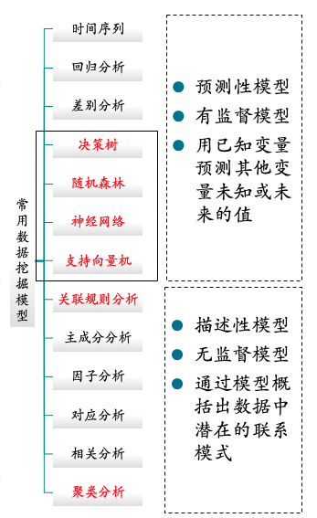
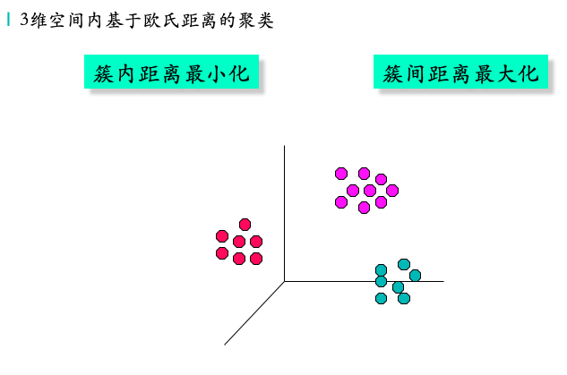
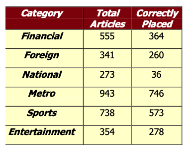
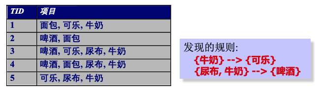

library(rvest)
myurl = "https://sthjj.xm.gov.cn/zwgk/gsgk/xzcf/"
web<-read_html(myurl, encoding="UTF-8") #获取html网页文本
punishcompany <- web %>% html_nodes("div.gl_list1 ul li a") |> html_text() # 获取网页数据处罚书
punishdate <- web %>% html_nodes("div.gl_list1 ul li span") |> html_text() # 获取处罚时间
punishlink <- web %>% html_nodes("div.gl_list1 ul li a") |> html_attr(name = "href") # 获取处罚书链接
punish <- data.frame(company=punishcompany, date=punishdate, link=punishlink) # 将数据保存到数据框网页爬取与机器学习
网页爬取
R语言可以承担一些简单的网页爬取工作，并且可以很方便的进行分析，但是具有反爬虫机制的动态网页还需更专业的爬虫工具，例如Python等。
静态网页数据爬取
以厦门市生态环境局行政执法栏目为例说明静态网页爬取过程。
爬取网页数据，首先需要确定网页数据的位置。通常可以采用CSS selector he和Xpath。CSS selector通过数据所在对象的样式和模式指定位置，参见CSS Selector的语法；而XPath使用路径表达式来选取网页文档中的节点，可以参考XPath的语法。可以通过Chrome浏览器的开发者检查元素功能，找到数据所在的页面的对象，帮助获取样式或模式信息，确定对象的位置。示例网站处罚书来自类别（class）名为gl_list1的div的对象，并且依次向下有ul、li和a三个对象层级，a链接对象中是处罚书的名称等内容。通过rvest包中的read_html()、html_nodes()、html_text()、html_attr()函数可以实现获取html文本、网页对象节点、网页对象内容、网页对象属性内容等功能。
可以通过循环，快速爬取多个类似结构的静态页面
for(i in 1:10){
url <- paste(myurl, "index_", i, ".htm", sep = "")
web<-read_html(url,encoding="UTF-8")
punishcompany <- web %>% html_nodes("div.gl_list1 ul li a") |> html_text()
punishdate <- web %>% html_nodes("div.gl_list1 ul li span") |> html_text()
punishlink <- web %>% html_nodes("div.gl_list1 ul li a") |> html_attr(name = "href")
punish1 <- data.frame(company=punishcompany, date=punishdate, link=punishlink)
punish <- punish %>% rbind(punish1)
}
head(punish) # 展示获取的处罚书数据 company date
1 厦门市腾盛兴电子技术有限公司行政处罚决定书 2024-11-26
2 厦门市玖玖机动车检测有限公司行政处罚决定书 2024-11-13
3 解除扣押决定书厦门市腾盛兴电子技术有限公司 2024-10-16
4 张帅涛行政处罚决定书 2024-10-11
5 厦门日上钢圈有限公司行政处罚决定书 2024-10-11
6 厦门钟利机动车检测有限公司行政处罚决定书 2024-09-29
link
1 ./202411/t20241126_2903149.htm
2 ./202411/t20241113_2900716.htm
3 ./202411/t20241129_2903969.htm
4 ./202410/t20241011_2894766.htm
5 ./202410/t20241011_2894762.htm
6 ./202409/t20240929_2892737.htmtail(punish) # 确认是否已完整获取数据 company
193 厦门文仪电脑材料有限公司责令改正违法行为决定书 闽厦（执法）环改〔2022〕1号
194 责令改正违法行为决定书 厦门日上金属有限公司
195 厦门恒兴兴业机械有限公司行政处罚决定书 闽厦环罚〔2021〕363号
196 厦门海湾化工有限公司行政处罚决定书 闽厦环罚〔2021〕345号
197 厦门海湾化工有限公司行政处罚决定书 闽厦环罚〔2021〕344号
198 厦门三荣陶瓷开发有限公司不予行政处罚决定书 厦环（执法）不罚决字[2021]1号
date link
193 2022-01-10 ./202201/t20220110_2616014.htm
194 2022-01-05 ./202305/t20230526_2761318.htm
195 2021-12-31 ./202201/t20220110_2616044.htm
196 2021-12-15 ./202112/t20211215_2608718.htm
197 2021-12-15 ./202112/t20211215_2608715.htm
198 2021-12-10 ./202112/t20211215_2608668.htm动态页面的爬取
动态页面与静态页面不同，一般通过与用户建立对话（session）获取用户的数据请求，采用Javascript等程序语言建立定制页面返回数据。因此采用静态页面的方法是无法定位数据的。下面以厦门市生态环境局的咨询投诉栏目为例，介绍动态页面的爬取。
myurl = "https://sthjj.xm.gov.cn/gzcy/wyzx/"
web<-read_html(myurl, encoding="UTF-8")
web %>% html_nodes("div.gl_list2 ul li a") {xml_nodeset (1)}
[1] <a ms-attr-href="'./index_18763.htm?id='+el.letterId+'&chnlId='+el.ch ...web %>% html_nodes("div.gl_list2 ul li a") |> html_text()[1] ""动态页面可以先通过会话请求页面，在爬取数据后，可以模拟点击下一页，此时会话会指向下一页，便可以爬取下一页的数据，依此直到爬取结束。
library(chromote)
sess <- read_html_live(myurl) # 请求动态页面
#sess$view()
consultdata <- NULL
i=1
while(i<10){
consult <- sess %>% html_elements("div.gl_list2 ul li a") |> html_text() # 获取相关数据
date <- sess %>% html_elements("div.gl_list2 ul li font") |> html_text()
link <- sess %>% html_elements("div.gl_list2 ul li a") |> html_attr(name = "href")
if(length(consult)==0| !(length(consult)==length(date)&length(consult)==length(link))) next
consulttemp <- data.frame(consult=consult, date=date, link=link)
consultdata <- consultdata %>% rbind(consulttemp) # 保存到数据框
if(nrow(consultdata) == 200) break # 如果完成爬取，退出
sess$click("a.next.b-free-read-leaf") # 模拟页面点击下一页
i=i+1
}
head(consultdata)
tail(consultdata) # 检查数据文本挖掘
R语言能够对已获取的文本数据进行挖掘探索，对文本进行分词后，探索主题词的频率，建立文档-词条矩阵，进行文本聚类和有目的的自动分类，进行主题建模和情感分析等。
设置环境
R语言需要Java支持才能使用文本挖掘相关软件包，首先要根据操作系统下载jdk程序进行安装，然后在rstudio中安装rjava包和Rwordseg包（install.packages(“Rwordseg”, repos=“http://R-Forge.R-project.org”)），中间可能还需要手动安装一些依赖的包。
library(rJava)
library(Rwordseg)文本预处理与分词
分词是文本分析的基础，可以在分词前给出文本中常见的小地名防止错误分割词汇，还可先剔除掉数字以减少干扰。在文本预处理之后，便可以采用segmentCN函数对数据进行分词，分词器采用“jiebaR”的效果比较好。分词后可以通过设定stopwords将一些没有含义的连词、语气词等剔除。
insertWords(c("思明","湖里","同安","翔安","海沧","集美","杏林","厦门","新垵"))
consulttemp <- gsub("[0-9０１２３４５６７８９ < > ~]","",consultdata$consult)
consulttemp <- segmentCN(consulttemp, analyzer = "jiebaR")
removeStopWords <- function(x,stopwords) {
x=x[!( x %in% stopwords)]
return(x)
}
stopwords <- stopwordsCN(c("了", "是", "无", "请问", "及", "小", "与", "如何", "不", "的", "可以"))
consulttemp <-lapply(consulttemp,removeStopWords,stopwords)词条排序与词云
words <- lapply(consulttemp, strsplit, " ")
wordsNum <- table(unlist(words))
wordsNum <- sort(wordsNum, decreasing = T) #排序
wordsData <- as.data.frame(wordsNum)
library(wordcloud2) #加载画词云的包
consulttop150 <- head(wordsData,150) #取前150个词
wordcloud2(consulttop150)数据挖掘与机器学习简介
为什么要挖掘数据？
商业角度
- 大量数据被收集和存储
- 网站数据、电子商务
- 超市和商店的购物信息
- 银行账户和信用卡的交易
- 网站数据、电子商务
- 计算机变得越来越便宜，越来越高效
- 竞争压力越来越大
- 为客户提供更优质的定制化服务（客户关系管理）
科学角度
- 收集存储的数据急剧增长(每秒1.7兆字节)
- 遥感卫星
- 天文望远镜
- 基因数据
- 科学模拟数据
- 遥感卫星
- 传统技术无法处理
- 数据挖掘能够帮助科学家
- 进行数据分类和分段
- 建构假设
- 2024年诺贝尔物理学奖获得者约翰·霍普菲尔德和杰弗里·欣顿是两名机器学习领域的元老级人物。 他们使用物理学工具，设计了人工神经网络，为当今强大的机器学习技术奠定了基础。
- 2024年诺贝尔化学奖授予戴维·贝克、德米斯·哈萨比斯和约翰·江珀。他们采用人工智能在“计算蛋白质设计”和“蛋白质结构预测”方面成就斐然。这也是继物理学奖之后，诺贝尔奖再次被授予人工智能（AI）的相关成果及科学家。
发掘大数据的动机
- 数据中经常有一些“隐藏”的信息，很难一目了然的发现
- 手工分析可能需要好几个星期的时间去发现有用的信息
- 很多数据根本没有用于分析
什么是数据挖掘？
- 从数据中提取隐含的、未知的和潜在有用的信息
- 通过自动或半自动的探索和分析方法在大型数据中发现有意义的模式
什么不是数据挖掘？
- 服务数据中查找用户的电话号码
- 用百度搜索“京东快递”的信息
什么是数据挖掘？
- 某些姓名在某些地区可能更普遍
- 依据具体情形对搜索引擎返回的信息进行分组（对京东快递服务的正面和负面评价）
数据挖掘的起源
- 来自机器学习、人工智能、模式识别、统计学和数据库方面的思想
- 传统的技术无能为力
- 数据量太大
- 高维度数据
- 异种数据和复杂数据
- 数据量太大
数据挖掘的任务
- 分类 [预测]
- 聚类 [描述]
- 关联规则发现 [描述]
- 序列模式发现 [描述]
- 回归 [预测]
- 背离检测 [预测]

分类
定义
- 给定一组记录 (训练集)
- 每条记录包含一组属性，其中一个属性称之为类别.
- 每条记录包含一组属性，其中一个属性称之为类别.
- 构建一个模型使类别属性成为其他属性值的函数.
- 目标：尽可能将未见过的记录精确归类.
- 测试集用于决定模型的精度. 一般将数据分成训练集和测试集，采用训练集构建模型，用测试集去验证。
分类的例子：退税、婚姻、收入？逃税

分类的应用：直销
- 目的： 锁定可能购买新产品的消费者减少邮寄成本
- 方法:
- 采用已有相似产品的数据.
- 已知哪些客户决定买，哪些客户决定不买. 购买的决定就是类别属性.
- 收集这些客户的人口学特征、生活方式等信息.
- 工作性质、生活区域、收入情况等.
- 采用这些信息作用输入属性来训练分类器模型.
- 采用已有相似产品的数据.
分类的应用：信用卡欺诈检测
- 目的：预测信用卡交易中的欺诈.
- 方法：
- 采用信用卡持有人的交易信息作用属性.
- 持卡人什么时候买、买什么、购买频率等
- 过去的交易是否是欺诈或正常交易，这便是分类属性.
- 训练交易分类模型.
- 用模型对某个账户的信用卡交易进行分析检测是否存在欺诈.
- 采用信用卡持有人的交易信息作用属性.
分类的应用：太空探索分类
- 目的：预测天体的类别（恒星或星系），特别是针对那些在望远镜上看起来不清楚.
- 3000 images with 23,040 x 23,040 pixels per image.
- 3000 images with 23,040 x 23,040 pixels per image.
- 方法:
- 图像分段.
- 测量图像的属性，每个天体有四十个属性.
- 基于属性构建分类模型.
- 成功找到16个新的高红移类星体, 难以发现的最远天体!
- 图像分段.

聚类
定义
- 有一组数据点，每个点有一组采用相似测量方式的属性，实现如下分类（分簇、分堆）
- 簇内数据点比其他簇的数据点更相似.
- 簇间数据点的差别要尽可能大.
- 簇内数据点比其他簇的数据点更相似.
- 相似性的测量:
- 欧氏距离用于连续型属性.
- 其他基于具体问题的度量方式.
- 欧氏距离用于连续型属性.
聚类示意

聚类应用：市场划分
- 目的：对市场客户进行划分，利于采用不同的营销策略针对不同的客户群体.
- 方法:
- 基于客户的地理位置和生活习惯收集不同的信息属性.
- 发现相似客户的组群.
- 通过对比簇内客户和簇间客户的购买模式检验聚类的质量.
- 基于客户的地理位置和生活习惯收集不同的信息属性.
聚类应用：文档聚类
- 目的: 根据文档中的主题词的出现情况对文档进行分组.
- 方法：识别每个文档中频繁出现的主题词.利用不同主题词出现的频率测量文档的相似性，并对其聚类.
- 应用：信息检索能够利用聚类的信息将新文档或检索词与聚类后文档联系起来.
文本聚类示例
- 聚类点：洛杉矶时报的3204篇文章.
- 相似性测量：文档中有多少相同的词.

股市数据聚类
- 观察每天的股票动态.
- 聚类点：股票-{涨/跌}
- 相似性测量：如果同一天相同的涨跌频繁发生那么两点越相似.
- 用关联性法则量化相关性.

关联规则发现
定义
- 给定一组记录，每条记录包含给定集合中的某些项目；
- 发现能够根据其他项目出现来预测某个项目出现的依赖规则.

关联规则应用：市场营销
- 假设发现了如下规则 {可乐, … } –> {薯片}
- 薯片是后发生 => 能够用于决定如何提升其销量.
- 可乐是先发生 => 能够用于了解如果可乐出现断货，会影响哪一类产品的销量.
- 可乐先发生和薯片后发生 => 能够用于了解什么产品应该与可乐一起销售以提高薯片的销量！
关联规则应用：超市货架管理
- 目标：通过顾客的购买行为了解会被同时购买的商品.
- 目的：处理扫码后的销售数据发现商品之间的依赖关系.
- 一条规则 –
- 如果一位顾客买了尿布和牛奶，他很有可能会买啤酒.
- 所以超市在尿布货架旁布置啤酒！
- 如果一位顾客买了尿布和牛奶，他很有可能会买啤酒.
关联规则应用：清单管理
- 目的：电器维修公司想预测维修消费者电器需要的原配件，那么可以事先带上，以减少往返和上门的次数.
- 方法：对不同区域消费者之前维修所用原配件和工具的数据进行处理，发现共同出现的模式.
回归
- 在假定线性或非线性依赖关系的前提下，根据其他变量预测给定连续型变量的值.
- 在统计学和神经网络领域应用最多.
- 例子：
- 基于广告费用预测新产品的销售量.
- 利用温度、湿度和气压等构建函数预测风速.
- 对股市指标进行时间序列预测.
- 基于广告费用预测新产品的销售量.
背离/异常检测
- 从正常行为中检测显著的异常
- 应用：
- 信用卡欺诈检测
- 网络入侵检测：一般大学每日网络访问量多达1亿个连接
- 信用卡欺诈检测
数据挖掘面临的挑战
- 尺度扩展性
- 高维度
- 异种数据和复杂数据
- 数据质量
- 数据所有权和分布
- 隐私保护
- 实时动态数据流